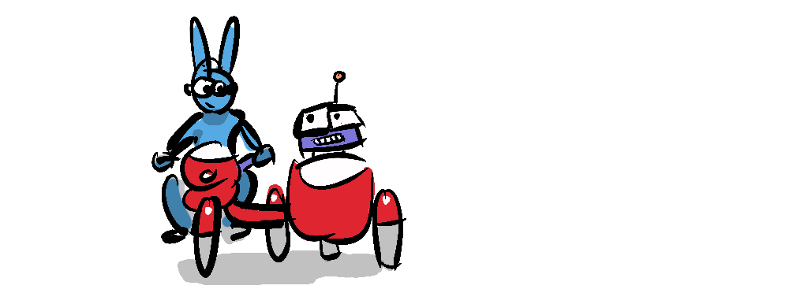
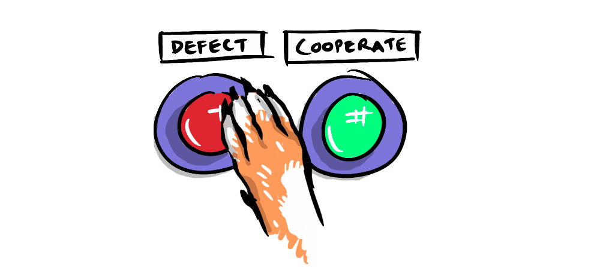
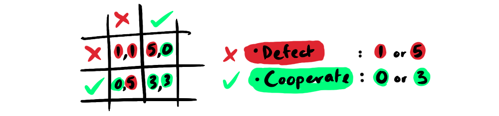
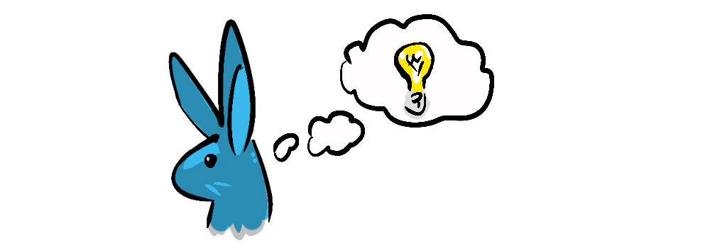
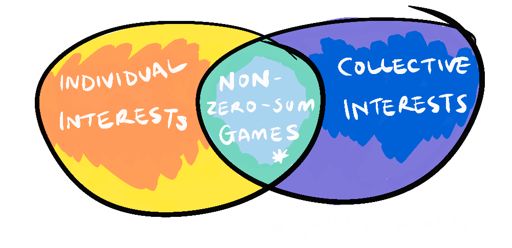
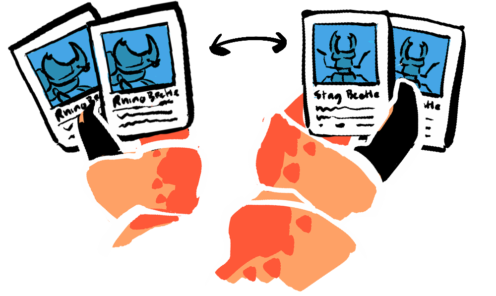

Hey everyone, today we're going to be playing some games so there are going to be some rules!
RULES
- We're going to be breaking into pairs.
- Each player is trying to get as many counters as they can—there will be a winner.
- We will also be looking at how many you get as a pair and altogether.
- We are using these games to reflect on the real world, if they spark any ideas for you, let the group know.
- These are just games, they will include opportunities to make choices that might be considered questionable. After the games are complete we are still going to be friends.
- I encourage everyone to use a wide range of strategies and give something a go if you think it will work. This will help demonstrate different ideas.
- While it is within the rules to lie about your intentions in a game, it is not okay to actually cheat or steal actual tokens from someone else or the pool.
So, imagine you have just robbed a bank. You've broken into the safe packed the money bags, jumped in your stolen getaway car with your partner, and sped off down the highway, only to be tailed by the cops, as you weave through some dark back streets in an attempt to lose them, you throw the money bags out the window to avoid being caught with the evidence. Alas, eventually you reach a police cordon and screech to a halt, cornered by the police cars chasing you. The jig is up, you and your accomplice are arrested and taken in for questioning.
This story is opening to the prisoner's dilemma. A foundational thought experiment in game theory—a field of mathemathics which uses games like the prisoner's dilemma to help us understand the dynamics of real life.
You find yourself in a room without your partner, with two cops...
Good cop says "Hey mate, I'll cut you a deal, if you confess to the crime, and testify against your partner, we will let you go free."
You protest "My lips are sealed, I didn't do nuffin".
Then bad cop steps in, "Look here scruff, if you don't confess, you're partner is getting the same offer, you think he's not going to spill the beans on you?"
Do you cooperate with your partner or defect and betray them?
Now, since we're of course not threatening the class with jail time, let's look at how we might play the game with counters. If you both cooperate with each other you will get a good payoff (3), if you both defect or betray your partner you will get a bad payoff (1), but if you defect, and your partner cooperates you will get the best payoff (5) and they will get the worst (0), and visa versa. You can visualise this situation with a payoff matrix:
What do you think the best strategy is...? Let's put your theories to the test. This is the first of 6 games we'll be playing.
GAME 1 : THE PRISONER'S DILEMMA
- There is one round of play.
- You choose to cooperate or defect (betray) your partner.
- You can keep secret or lie about what you're going to do.
- You show your decision by taking one counter behind your back then putting a closed fist forward to your partner—and they do the same.
- Both players open their hands revealing a counter or not.
- If you reveal a counter you have chosen to cooperate, if not you are defect.
- If you both reveal a counter you receive 3 counters each.
- If you both betray you receive 1 counter counter each.
- If one of you cooperates and the other defects, the defector gets 5 and the cooperator gets 0.
As mentioned this is our first foray into game theory. Game theory looks at life as if it were a game—asking questions like What are the rules? If we run into a problem, how will we solve it? And what constitutes winning? My particular interest is in one aspect of game theory called non-zero-sum games. Has anyone heard of non-zero-sum games?
No doubt you have heard of win-win situations, where both parties gain from an interaction. Perhaps we can think of some of these situations in real life. Well, win-win games are a type of non-zero-sum game where there doesn't need to be a loser in order for there to be a winner. To understand non-zero-sum games it's important to start with zero-sum games.
GAME 2 : ZERO-SUM GAMES DEMO
- 2 volunteers each brings up 5 counters.
- One gives their counters to the other (zero-sum game win-lose).
- The other gives them back (another zero-sum game draw-draw).
Can you think of some examples of zero-sum games?
Zero-sum games are not all as boring as the game we just played, chess for instance is a zero-sum game, or tug of war, or allocating a fair share of any resource amongst friends. There is nothing wrong with zero-sum games, but what they don't do is generate anything greater than the sum of their parts. Non-zero-sum games, on the other hand do, they work towards mutual benefit and collective rewards, even in a competitive environment. Non-zero-sum games exist in the fields of ethics, economics, ecology and in the various interconnected systems that make up our world.
We've already started looking at ethics in the Prisoner's dilemma, where you have an ethical decision between cooperating with your partner or defecting in the interest of your individual well being.
Did you think it was a zero-sum game? or a non-zero-sum game? What strategy was best?
What if we played the game multiple times? Would you change your strategy?
GAME 3 : ITERATIVE PRISONER'S DILEMMA
- 5 rounds of the prisoner's dilemma
Who did the best; cooperators or defectors?
It's important to reinforce at this point that, when we don't know the end point, the dominant strategy is to cooperate, and in the real world, we are in this very situation, because we don't know when the game ends.
Even if we are playing a game with a defined end, there will always be future games, and we are building trust for those games. That trust enables us to capitalise on mutual gains throughout our lives.
Another key example of non-zero-sum games is trade—where you have one country that has, for instance like NZ, lot's of high quality beef or milk, but not so much in the way of pineapples or computers. We are able to export goods that we can produce a lot of, and use the profit to buy goods that we can't produce.
GAME 4 : CARD SWAP GAME
- Each player gets 4 cards
- You have 5 minutes to swap with others to try and get the longest sequence you can.
- You get counters for the length of your sequence.
Isn't it remarkable that sometimes just by trading what we don't need we can get everything we need?
So, we're starting to see that we have to take each other into account when making decisions, even if we are only out for our own gains. How far does thinking about others and the world outside us need to go though?
GAME 5 : SHARING PROFITS
- This game goes for 5 rounds.
- Each player places 2 counters on the table.
- For ever 2 counters one counter is added to the table by the bank.
- Now all players use a dice to line up.
- Each player in line can take up to 10 counters.
Some interesting questions to consider here are...
What would happen if the same person got to go first every time?
Or the richest person got to go first every time?
What if people could take what the wanted in secret?
What if we take into account the environment?
GAME 6 : THE OPEN ACCESS PROBLEM
- This game goes for 5 rounds or until everyone pulls out.
- We begin with 20 counters on the table (the environment "e").
- Each player places 2 counters on the table.
- The total counters is multiplied by e/10 (so, if there are 20 environment counters, the player counters are multiplied by 2).
- Players roll dice to line up.
- Each player in line can take up to 10 counters, including environment counters.
What did you learn from this game?
How does this experiment map to the real world?
We can see that contributing to the environment in this example meant that we could achieve long term gains.
Who got that most tokens?
What pairs got the most?
How many did the class get altogether?
What did we learn about what strategies to use?
What worked in the short term and in the long term?
The winner's prize is determined by the other players, after all we live in a world made of other people.
Non-zero-sum games are a lens through which we can look at the world.
By thinking about the sum value of any situation, we can think more clearly about whether it's something we want to be involved in. What games do we want to play, and which do we want to avoid?
Let's bring this back to building our world—Is it important, when building our world to have the highest individual score? Or is it most important to have the highest collective score?
Also, let's remember these games are about how to maximise individual payoffs, it takes two players with equal stakes in the outcome, but the world doesn't work like this. You may be in an advantaged position, and may be able to make decisions that have a great payoff for others with little impact on you, which we call being a nice person.
By taking part in non-zero-sum games, over time collective benefits accumulate and we all win.